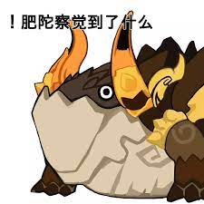

Azhdaha (Tajik: Aждаҳо Aƶdahô, "Dragon"; Persian: اژدها Azhdaha, "Dragon") is the Geo elemental dragon mentioned in
some Liyue legends; the Nameless Treasures are engraved with designs that tell his story,[3] and the World Quest Trails
in Tianqiu relates to him.